User Manual
Getting Started▼
If you haven't booted the game yet, go to the Installation section first. Otherwise, congratulations and welcome aboard! Once you have the game running, you will be prompted to pick your first egg.
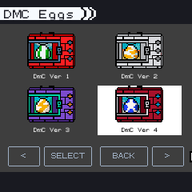First Steps
- 1. Navigate around the menu, if you have more than one installed module, move the cursor beyond the avaliable pets to the LEFT or RIGHT to switch module. Choose an egg by pressing A.
- 2. Hatching an egg takes around a minute, during this phase, some modules can grant you a permanent status boost by SHAKING the egg a certain amount of times.
- 3. Once your first egg hatches, you will hear a sound alert, you will hear it every time a pet needs your attention. Navigate around the menus using UP, DOWN, LEFT, RIGHT buttons and select with A.
- 4. Take good care of your pet by feeding, training, and keeping it healthy. The way you care for your pet will influence its evolution path directly, so keep up with its needs!
- 5. The journey is in your hands! Add more eggs, explore, train, and battle with your pet to unlock its full potential.
Controls▼
These are default controls for the game, each device can have its own mapping for these buttons. You can customize the mapping by editing file input_config.json inside the config folder
- UP | DOWN | LEFT | RIGHT: Navigate menus
- A: Select options and confirm actions
- B: Go back or cancel actions
-
X: Toggle the "Needs HUD", this will show the current hunger and strength
levels of a pet, only works in the main game screen

-
Y: Shake, this is a function intended for devices without support for an
accelerometer, it replaces the shake function

-
START: In the main game screen, it will open the Settings menu, in some areas
of the Battle Menu, it is used to confirm an operation

-
SELECT: In the main game, it switches between menu and pet mode, while in other
menus it servers to switch the pet selection type


Selecion Modes - Main Game
In "Menu Mode" it's possible to navigate the menu options. In "Pet Mode" it's possible to select pets, the selection is used inside other menus for various functions (for example to feed only a few pets). A blue outline means the pet is currently selected.
 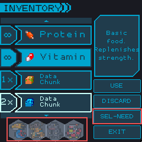
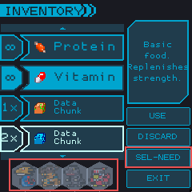
Selecion Modes - Menus
Inside the menus it's possible to change the "Selection Type" between all pets capable to use the function or only the pets who need that function. (for example a pet that has not filled it's hunger meter or hasn't reached max effort)
-
L: In the main game, it will flip the screen. This function is meant for
devices with support for physical prisms like the GamePi.


-
R: In the main game, it will distribute the pets evenly, helpful for looking at
all pets at once.
Main Menu Options▼
From the main game screen in "Menu Mode", you have access to two primary menu options:
Status Menu
Access detailed information about your pets including age, weight, level, battle statistics, care information, and evolution status. Navigate through multiple pages to see all pet data.
Settings Menu
Access game configuration, the Digidex, Freezer Box, unlockables, and background selection. This is your central hub for managing the game and your pet collection.
Use the directional keys to navigate between these options, and press A to enter your selected menu.
 Status Menu▼
Status Menu▼
| 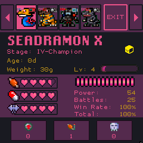 |
Select a pet to view it's status. This view show the pet's name, stage and attribute * Stage: Stage represents the pet's current growth stage. The possible values are: 0-Egg, I-Fresh, II-In-Training, III-Rookie, IV-Champion, V-Ultimate, VI-Mega, VII-Super Ultimate * Attribute: Pet's can belong to 4 possible attributes: Free, Data, Virus, and Vaccine. They operate in a Rock-Paper-Scissors format granting advantage in battles. Vaccine is strong against Virus. Virus is strong against Data. Data is strong against Vaccine. Free has no strength or weakness. |
| 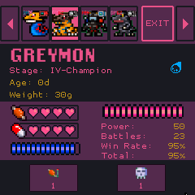 |
Page 1 This page show's the pet's main status information
|
| 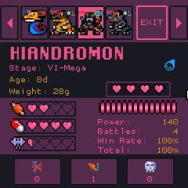 |
Page 2 Care information, level and mistakes
* Battle: Show if the pet can battle. These are defined by the module, but usually a pet requires to be at least at stage 2 and have power status higher than 0. * Jogress: Show if a pet is avaliable for Jogress. This is a special evolution that requires two pets to merge into a new one. |
| 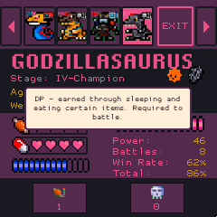 |
Page 3 Shows status related to battles * Effort: Indicates how much training your pet has completed. Higher effort can unlock evolutions and improve battle performance. * Power: Represents your pet's attack strength. A pet gains bonus power if at max effort and if born from a traited or shaken eggs (in some modules only). When a pet has bonus power avaliable, the value will be displayed in green. * DP: DP is consumed during battles and replenished by sleeping for over 8 hours or eating vitamins. * Battles (Current/Total): Shows the number of battles your pet has fought in its current stage and the total across all stages. * Win Rate: The percentage of battles won in the current stage. Many evolutions require a minimum of 80% to evolve. * Win Rate Total: The overall percentage of battles won throughout your pet's life. * PvP Wins: Number of Player vs Player battles won. Some evolutions require specific PvP victory counts. * Enemy Kills by Stage: Tracks enemies defeated at different stages (Stage V-IX). Higher stage enemy kills unlock special evolutions. |
| 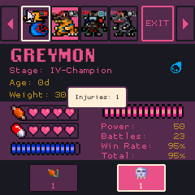 |
Page 4 Shows the pet's timers and flag information * Evolution: Indicates when your pet is ready to evolve. Evolution is based on age, care, and other requirements. * Sleeps: The time your pet naturally sleeps. It can be overridden in the settings menu, a pet that is kept awake for too long will cause a care mistake. * Wakes: The time your pet naturally wakes up. It can be overridden in the settings menu. A pet can be awaken by feeding, training or battling, doing so will count as a Sleep Disturbances. * Poop Time: Tracks the amount of time between poops. Popping stack and if reaches 8 per pet in game, it will make all pets sick. * Feed Time: Tracks the amount of time between the hunger/strength values decrease. Not feeding a pet, it will count as a care mistake. It can lead to death after a certain amount of time. * Flags: Special status indicators for your pet, such as traited, shaken and special (secret evolutions) * Quests Completed: Number of quests completed by this pet. Some evolutions require completing specific numbers of quests. * Trophies: Number of trophies earned by this pet through various achievements. * Vital Values: Special evolution parameter that tracks important life events and achievements. |
 Age:
Age represents the pet's
current age in days.
Age:
Age represents the pet's
current age in days. Weight: Weight represents
the pet's current weight. Weight is gained by eating food items (like
Protein) and lost through training; modules define the amount. If a pet
reaches 99g, it becames sick.
Weight: Weight represents
the pet's current weight. Weight is gained by eating food items (like
Protein) and lost through training; modules define the amount. If a pet
reaches 99g, it becames sick. Module: The name of the
module the pet belongs to. The module defines the pet's behaviours and
characteristics.
Module: The name of the
module the pet belongs to. The module defines the pet's behaviours and
characteristics. Version: The pet's
version as set in the module. Versions are used to define evolution lines.
Version: The pet's
version as set in the module. Versions are used to define evolution lines.
 Hunger:
It's a representation of how full a pet is. Every pet will lose "hunger"
over time; eat protein to fill it. Basic protein fills 1 heart. Each pet has
a "stomach" — a limit to how much protein it can eat. Feeding a pet over its
limit counts as an overfeed. A pet can die if not fed for a long time.
Hunger:
It's a representation of how full a pet is. Every pet will lose "hunger"
over time; eat protein to fill it. Basic protein fills 1 heart. Each pet has
a "stomach" — a limit to how much protein it can eat. Feeding a pet over its
limit counts as an overfeed. A pet can die if not fed for a long time.
 Level and Experience:
An important stat for battles. Pets gain experience by defeating enemies in
adventure mode. When a pet evolves, its level resets to 1. The maximum level
a pet can reach depends on its stage:
Level and Experience:
An important stat for battles. Pets gain experience by defeating enemies in
adventure mode. When a pet evolves, its level resets to 1. The maximum level
a pet can reach depends on its stage:
 Condition Hearts /
Mistakes:
Mistakes represent care failures. These include ignoring calls for food,
sleep, or bathroom needs. Accumulating too many mistakes can affect a pet's
evolution path and may prevent it from reaching higher stages.
Condition Hearts /
Mistakes:
Mistakes represent care failures. These include ignoring calls for food,
sleep, or bathroom needs. Accumulating too many mistakes can affect a pet's
evolution path and may prevent it from reaching higher stages.
 Sleep
Disturbances:
Waking up a sleeping pet counts as a
disturbance. It can influence the pet's evolution path.
Sleep
Disturbances:
Waking up a sleeping pet counts as a
disturbance. It can influence the pet's evolution path.
 Overfeed:
Feeding a pet beyond its stomach limit is considered an overfeed.
Overfeeding is a requirement for some evolutions. When overfed, a pet skips it's next
"hunger" decrease counter
Overfeed:
Feeding a pet beyond its stomach limit is considered an overfeed.
Overfeeding is a requirement for some evolutions. When overfed, a pet skips it's next
"hunger" decrease counter
 Injuries:
Pets can get injured from losing battles or reaching 99g. Accumulating too many injuries
will kill the pet.
Injuries:
Pets can get injured from losing battles or reaching 99g. Accumulating too many injuries
will kill the pet.
 Feeding Menu▼
Feeding Menu▼
Feeding is an essential part of caring for your pet. It directly affects their status and can grant temporary bonuses in battles. Modules can add items to the game with a variety of effects, only the basic Protein and Vitamin are available by default, they also have unlimited use.
 |
|
 Training Menu▼
Training Menu▼
 |
Training is an important aspect of pet care. It helps improve a pet's Effort stat, each training session grants 1 effort. 4 Effort points are necessary to fill 1 Effort Heart. At maximum effort, pet's get a bonus to their power stat, making attacks have increased chance of hitting the target. Also some evolution paths may require a certain amount of training sessions to be completed. You can skip the training animations by pressing the B button. If you make a sleeping pet train, it will count as a Sleep Disturbance. |
||||||||||||||||||||||||
 |
|
||||||||||||||||||||||||
 |
|
||||||||||||||||||||||||
 |
|
||||||||||||||||||||||||
 |
The table below shows, for each attribute, which color and shake count results in a Mega Hit, 3-4 Super Hits, or 2 Super Hits:
Tip: Try to time your shakes so you land on the correct color and shake count for your pet's attribute to maximize your training results! |
Battle Menu▼
| 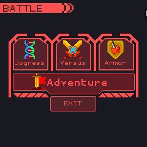 |
The Battle Menu is where the action happens! Here you can fight on the Adventure Modes of multiple modules, the primary source of items and experience. You can also perform Jogress and Armor evolutions, with many more features to come! |
| 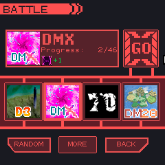 |
Adventure: Enter the adventure mode of the selected module. Here you can fight enemies, gain experience, and collect items. The adventure mode is defined by the module, so each module may have different charge mechanics, enemies and item drops. Use buttons LEFT and RIGHT to navigate between module's adventures and use keys UP and DOWN to change the round or area, so you can revisit already defeated enemies. Animations can be skipped with B button. |
| 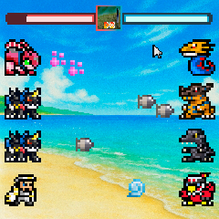 |
In Battle: Before a battle begins, a mini-game like the training modes will play out. Completing it successfully will give you an advantage in the upcoming battle. A battle can last for up to 12 turns in Adventure Mode and up to 6 turns in Versus. At each turn all combatants will try to attack each other. At the top of the screen the total hp is shown. Each combatant has it's own hp value and will be knocked out when it reaches 0, making it unable to attack. The game ends when all combatants on one side are knocked out or when the turn limit is reached, in this case the team with the most remaining hp wins. Draws give advantage to the enemies in Adventure Mode. |
| 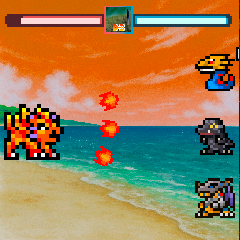 |
Boss Battles: Boss battles are special encounters that occur at the end of an area. In this mode, the enemy boss will attack all pets at once, prepare your pets for a challenge! |
| 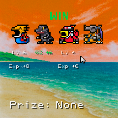 |
End of Battle: At the end of the battle , the results will be displayed, they show the victory status and the pets involved in the battle. Each pet will get the same amount of experience. When a pet levels up, it's level will show in yellow with a "+". If a pet is already at the maximum level, it will not receive experience and it will show in red. If at the end of a battle in Adventure Mode, all pets survive, then they will receive a 10% experience bonus. Some enemies can also drop items. |
| 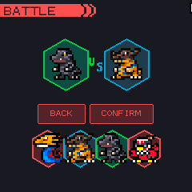 |
Versus: Engange your pets in a battles against one another. Battles in this mode follow protocols from actual vpet devices. You can find more information of each protocol by following guides on Humulos. To start a battle, press A on 2 pets to select them, then press START and a menu will show up so you can pick a protocol. Animations can be skipped with B button. |
| 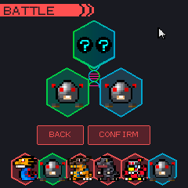 |
Jogress: Jogress is a special evolution that requires two pets to merge into a new one. To perform a Jogress, select two pets of the same module using the A button and if they are compatible, the screen will show as the picture. Press START to execute the Jogress. The resulting pet will inherit traits from both including flags like Shaken or Traited. There are 3 types of jogress evolutions:
|
| 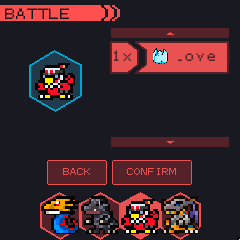 |
Armor: Some modules allow Armor Evolutions. To perform an Armor Evolution, select a pet using the A button and use keys UP and DOWN to move between evolution items. If the screen shows as the picture, the pet is compatible and can evolve. Press START to execute the evolution. Armor evolution consumes the item used. |
 Poops▼
Poops▼
| 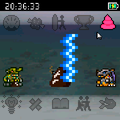 |
Pooping is a classical mechanic in pet simulation games. Poops can accumulate and if there are over 8 poops for each living pet, it will cause them to get sick. The game will play a sound when a pet poops, but won't alert you if the pets get sick. Leaving pets unattended for many hours can lead to death. All pets have a 10% to make a "Jumbo" poop, they are larger, but still function the same way as regular poops. |
 Sleep Menu▼
Sleep Menu▼
| 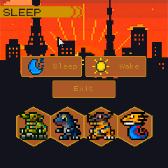 |
Allows to put pets to sleep or force them to wake up. Each pet has a natural sleeping time and will sound an alert when it's time to sleep, keeping a pet awakened past a certain amount of time (defined by the module) will count as a Care Mistake. Pets can be put to sleep out of their natural time without any penalties. Pets will not decrease their "hunger" and "vitamin" values while asleep, but also won't evolve (their evolution timers will keep running). All pets will wake up naturally on their wake up time without the need for intervention. If a pet is put to sleep manually they will still wake up on their own standard wake up time. It is possible to override a pet's sleeping schedule in the Settings Menu. It is possible to wake up a pet by trying to feed them or on training and battling, this will not count as a Care Mistake, but will count as a Sleep Disturbance which is a requirement for certain evolutions. If a pet has it's sleep disturbed, they will fall back asleep after a few minutes. Eggs and recently hatched pets cannot sleep. |
 Injuries and Healing▼
Injuries and Healing▼
| 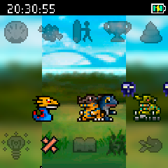 |
Pet's can get sick in many ways:
|
 Call Sign▼
Call Sign▼
| 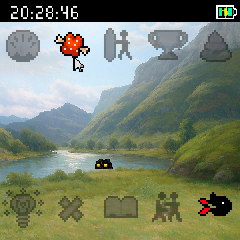 |
The Call Sign will alert you when a pet needs attention. It can be triggered by various events such as having its "hunger" or "vitamin" counters empty, or when the pet wants to sleep. Leaving the pet unatended will count as a Care Mistake, when the Care Mistake happens, another alert sound will play and the Call Sign will turn off. |
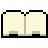 Library▼
The Library is your quest hub and navigation center. Here you can view and complete daily quests, and access important features like the Digidex, Freezer Box, and Settings.
| 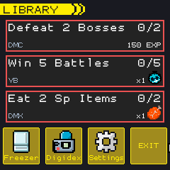 |
Daily Quests: Each day, three random quests are generated for you to complete. Quests provide rewards such as items, experience, trophies, or vital values. The quest system ensures variety by attempting to assign different quest types each day. Quest Types:
Quest Progress: Each quest panel shows the quest name, progress bar, and current completion status (e.g., "0/3"). As you complete quest objectives, the progress automatically updates. When a quest reaches its target, it becomes claimable. Quest Reset: All quests reset daily at midnight. Any unclaimed rewards from the previous day are lost, so be sure to claim them before the day ends. |
| 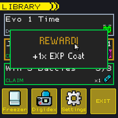 |
Claiming Rewards: Press A while hovering over a completed quest's CLAIM button to receive rewards. Alternatively, press START to claim all completed quests at once. A reward popup will display what you've earned. Reward Types:
Quest Completion: Quest completion counts are tracked across all your pets, not individually. The completion counter increments for all pets when you claim quest rewards. |
|
Navigation: The Library provides quick access to three major features:
Controls:
Tips:
|
|
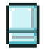 Freezer Menu▼
The Freezer is a storage system that allows you to manage your pet collection beyond the active party limit. You can store pets in 10 separate boxes, with each box holding up to 20 pets.
| 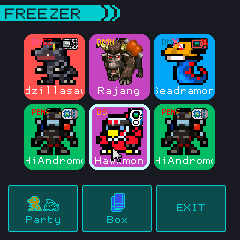 |
Party View: The Freezer opens to Party View by default, displaying your active party. Navigate with directional keys or click on pets to select them. Press A (or click) on a pet to open the action menu. Navigation:
If you have an empty slot in your party, selecting it will take you directly to the egg selection screen to hatch a new pet. |
| 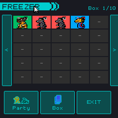 |
Box View: Switch to Box View to see the contents of your freezer storage. The current box number (1-10) is displayed in the top right corner. Navigate between boxes using L/R shoulder buttons or the arrow buttons on the sides (when mouse is enabled). Box Navigation:
|
| 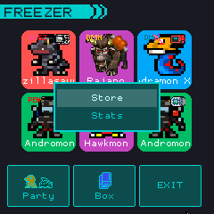 |
Action Menu: When you select a pet with A (or click), a menu appears with available actions: In Party View:
In Box View:
Use UP/DOWN to navigate the menu, A to confirm, or B to cancel and close the menu. With mouse support, simply click your desired option or click outside the menu to cancel. |
| 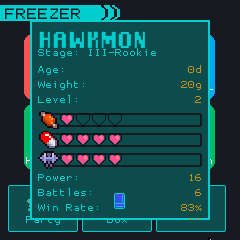 |
Stats Panel: View comprehensive information about any pet in your party or freezer boxes. The stats panel displays:
Press B (or click outside the panel) to close the stats view and return to the freezer menu. |
Important Notes:
- The Freezer can hold up to 200 pets total (20 pets per box × 10 boxes)
- Pets in the freezer do not age, get hungry, or require care
- You cannot move a pet to a full party or full freezer box
- Clearing (deleting) a pet is permanent and cannot be undone
- All changes are saved automatically when you make them
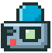 Digidex▼
The Digidex is your comprehensive encyclopedia for tracking discovered pets and exploring their evolution lines. It provides two distinct viewing modes to help you understand how different species evolve and progress through their life stages.
| 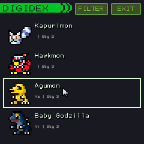 |
List View: The Digidex opens to List View by default, displaying all pets sorted by stage, module, and version. Each entry shows the pet's sprite (or "????" for undiscovered pets), name, attribute, and stage. Navigation:
Pet Display:
The list can display hundreds of pets, with sprites loading dynamically as you scroll to ensure smooth performance. |
| 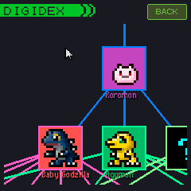 |
Tree View: Select any known pet to view its complete evolution tree. The tree displays all possible evolution paths within that module and version, with colored lines connecting related species. Tree Navigation:
Tree Features:
The tree view is ideal for planning evolution strategies and understanding the full scope of each module's evolution possibilities. |
| 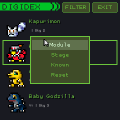 |
Filter Menu: The Filter button in List View opens a menu with multiple filter options to help you find specific pets quickly. Filters can be combined to narrow down results. Filter Options:
Using Filters:
|
Tips for Using the Digidex:
- Discovery: Pets are automatically registered in the Digidex when you first encounter them (through hatching, evolution, or battle)
- Completion Tracking: Use the "Known: No" filter to see which pets you haven't discovered yet
- Evolution Planning: Check the tree view before evolving to see all possible evolution options
- Module Exploration: Filter by module to see the complete roster for each installed module
- Performance: The Digidex uses smart sprite loading to handle large collections efficiently
- UI Hiding: The FILTER button automatically hides when viewing the evolution tree
Settings Menu▼
| 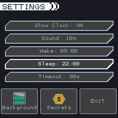 |
This menu is accessible from the Main Game screen by pressing START or through the Settings icon in the Library. It contains options to customize your game experience and provides access to background selection and unlockables. Settings Options:
Navigation: Use UP/DOWN to navigate options, LEFT/RIGHT/A to change values. Press B to return to the main screen. When mouse support is enabled, you can click buttons directly. |
| 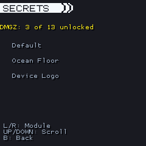 |
Secrets: View all secrets and unlockables you've discovered from every module. Use LEFT and RIGHT (or navigation buttons when mouse is enabled) to switch between modules, and UP and DOWN to scroll through the unlockable items in each module. |
| 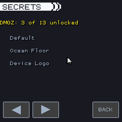 |
Secrets (Mouse Mode): When mouse support is enabled, navigation buttons appear at the bottom of the screen. Click the left/right arrows to change modules, and use the BACK button to return to the main settings menu. |
| 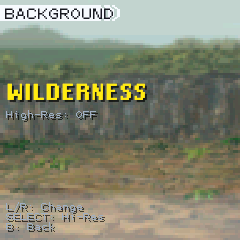 |
Background: Select the game's background image from unlocked backgrounds. Use LEFT and RIGHT keys (or navigation buttons when mouse is enabled) to browse available backgrounds, and SELECT (or the SEL button) to toggle between normal and high-resolution versions. Changes are applied immediately - simply exit the menu when done. |
| 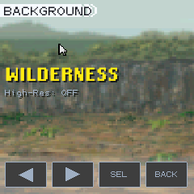 |
Background (Mouse Mode): When mouse support is enabled, clickable navigation buttons appear at the bottom. Use the left/right arrows to change backgrounds, SEL to toggle high-resolution mode, and BACK to return to the main settings menu. |
Module Overview▼
Modules are a key aspect of Omnipet. They define evolution lines and stats of your pets. You can add and remove modules directly in the modules folder. To enable the training and battle mini-games you need to have at least one active module of a specific ruleset. Dummy and HeadOn require a DMC module. Excite requires a DMX module. Count requires PenC module. It is not necessary to have an active pet of a module type tho. It is not recomended to remove a module while having a pet in the party or box. Updated modules won't reflect the status in an active pet, but will update it's evolution tree.
Configuration Files▼
Omnipet uses two main configuration files located in the config folder. These files allow you to customize the game's behavior, display settings, and input controls.
config.json - Game Settings
This file contains general game settings that control display, performance, and game limits:
| SCREEN_WIDTH | Game window width in pixels. Default: 240 |
| SCREEN_HEIGHT | Game window height in pixels. Default: 240 |
| FRAME_RATE | Target frames per second for the game. Default: 30 |
| MAX_PETS | Maximum number of pets that can be in your active party. Default: 6 |
| FULLSCREEN | Launch the game in fullscreen mode. Set to true or false. Default: false |
| AUTO_RESOLUTION | Automatically set resolution based on your screen resolution. When enabled, ignores SCREEN_WIDTH and SCREEN_HEIGHT. Note: This may reduce performance on some devices. Default: false |
| SHOW_FPS | Display the current FPS counter on screen. Default: false |
input_config.json - Input Controls
This file configures all input methods for the game. You can customize keyboard keys, mouse behavior, GPIO pins for Raspberry Pi, and joystick button mappings.
Keyboard Section
Map keyboard keys to game actions. Keys are specified using Pygame key constants (e.g., K_LEFT, K_RETURN).
- LEFT, RIGHT, UP, DOWN: Directional navigation
- A: Confirm/Select action
- B: Back/Cancel action
- X, Y: Alternative action buttons
- START: Open main menu
- SELECT: Secondary select action
- R: Right shoulder button
GPIO Section
Pin mappings for running the game on GamePi (Raspberry Pi Zero 2W). Each entry maps a GPIO pin number to a game action (e.g., "16": "LEFT").
Joystick Section
Map joystick/gamepad buttons to game actions. Each entry maps a button index to a game action (e.g., "0": "A"). Button indices may vary depending on your controller model.
Note: After modifying configuration files, restart the game for changes to take effect.